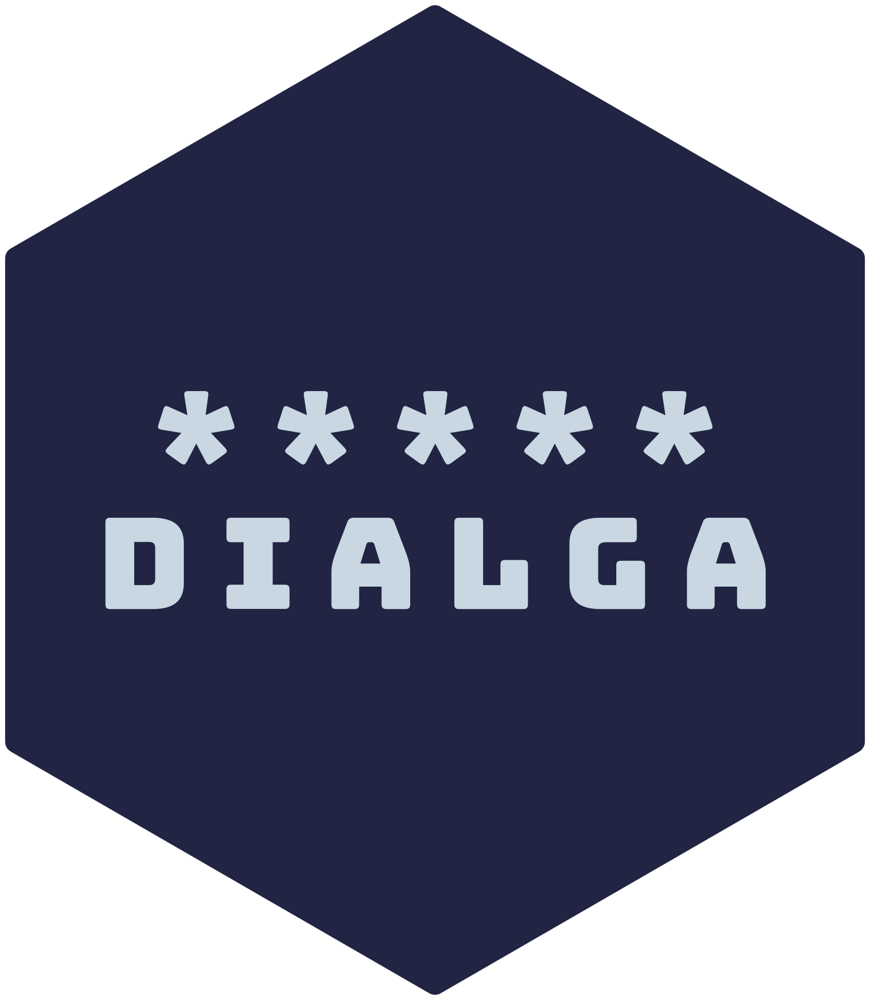

{kind=link}
install.packages("remotes") # if not already installed
remotes::install_github("matt-dray/dialga")
library(dialga)
tl;dr
I made the small proof-of-concept R package {dialga} to help build and interpret standard cron expressions using familiar R syntax. r2cron() converts R to cron; cron2eng() converts cron to English.
Cronwhat?
You can schedule scripts to run at specific times using software on your computer called ‘cron’. You can set up ‘cron jobs’ to specify what needs to be run. A key part of the recipe is a short cron string that provides instructions about when to run it.
The problem: cron strings are a bit cryptic if you’re not a sysadmin and don’t set up cron jobs very often. Here’s a contrived example: "0/15 * 1,3,20 6 2,3". What the heck does that mean?
Case study: me. I’ve been scheduling GitHub Actions using cron strings to specify when the actions should be triggered. For example, I set up a Twitter bot called londonmapbot that currently tweets a random aerial image every half-hour.
There’s a bunch of webservices like crontab.guru that help you construct cron expressions. I wondered if I could build one in R. It’s basically just a bunch of string handling and if statements, right? And while you’re at it, why not offer translation the other way? You have a cron string and you want to ‘translate’ it to English. Could be helpful.
New development paradigm
An aside. Two things: the package is about time and I’ve been looking recently at Repokémon, a site that tracks which Pokémon have GitHub repos named after them.
Therefore the package is called Dialga,1 named for the ‘temporal Pokémon’, which is the legendary mascot of the Pokémon Diamond game. The hex logo uses colours from the game’s sprite.
We’ve been here before. Consider {safar6}, my R package that contains an R6-class object that lets you play a text version of the Safari Zone from Pokémon Red and Blue. Or a Pokémon carousel widget with {slickr}. Or Pokéballs in Super Smash Bros.
I call this approach Pokémon-Driven Development (PDD). I think PDD has real promise in the development of pointless side-projects like this one. Use it wisely.
{dialga} demo
The package is available on GitHub; there are no plans for it to go on CRAN. You can use the {remotes} package to help you download {dialga} easily from the web.
In the same vein as the {r2eng} package, the two functions are named r2cron() and cron2eng(). This is pretty self-explanatory: r2cron() takes R inputs as integer vectors and spits out a cron string, and cron2eng() takes a valid cron string and prints out a readable English version.
As ever, it was banged-out in a couple of days and I can’t promise it’s bug-free. Let me know if you find anything broken horribly.
Note
The package moved to v0.1 since this post was published. The update removed all dependencies, improved the documentation and set clipboard-copying behaviour to FALSE by default. Feel free to offer more improvements.
A primer
But first, a quick demo on standard cron expressions. Their format is a string of five time-period ‘slots’ separated by spaces. The slots from left to right specify the minutes, hours, days of the month, months, and days of the week that you want to schedule your script to run.
The format required for the values in these slots can be expressed relatively easily as R code, which is what r2cron() uses as input. For example, this table shows cron-string formats for the minutes slot and the corresponding R integer vector for them:
| Description | Cron | R |
|---|---|---|
| Every minute (minutes 0 to 59) | * |
0:59 |
| A single minute (5) | 5 |
5 |
| A consecutive sequence of minutes (1, 2 and 3) | 1-3 |
1:3 |
| Several irregularly-spaced minutes (1, 15 and 17) | 1,15,17 |
c(1, 15, 17) |
| A sequence of minutes at regular intervals for the whole hour, starting with some value (every 15 minutes starting at minute 0) | 0/15 |
seq(0, 59, 15) |
The same principles extend to the other time-period slots, but the ranges will obviously differ. For example, the hour slot can take values 1 to 23 (i.e. a 24-hour clock), while the days of the week are zero-indexed from 0 (Sunday) to 6 (Saturday). An asterisk is a special character meaning every unit of that time period, like every minute and every hour.
So ‘every 30th minute past the hour’ would be "30 * * * *". The contrived example string from the opening of this post—"0/15 * 1,3,20 6 2,3"—translates as ‘every 15 minutes starting from minute 0 of every hour, on the 1st, 3rd and 20th of June; and Mondays and Tuesdays’.
To help simplify things, the r2cron() function lets you specify each slot in turn as arguments. Each input is an R expression like in the table above. You don’t have to worry about cron-specific symbols, you just provide the appropriate integer vector.
Simple example
How would you specify the 28th minute past 11PM every day with r2cron()? You pass the value 28 to the minutes argument and 23 to the hours argument. The resulting cron string has a 28 in the minutes slot and a 23 in the hours slot, as expected.
x <- dialga::r2cron(
minutes = 28,
hours = 23 # 24-hour clock
)
x[1] "28 23 * * *"Great, there’s our cron string!
You may have noticed from the documentation that there’s also a clip argument. This is for your convenience; when set to TRUE, the output will be copied to the clipboard for you to paste elsewhere, like into the YAML of a GitHub Action in my case. You will need separately to install {clipr} yourself from CRAN if you want this functionality in {dialga}.
Cool, but how do we know this worked? We could pass the cron string into cron2eng() to confirm it.
dialga::cron2eng(x)Cron string '28 23 * * *' means:
- minute(s) 28
- hour(s) 11PM
- every day(s) of the month
- every month(s)
- any day(s) of the weekThis text output isn’t sophisticated, but it communicates the point. I’ve chosen to keep it simple by breaking it into bullet points, rather than wrestling the output into a potentially confusing single sentence.
Of course, this means you could pipe these functions together to go from R to cron to English in one go.
library(magrittr) # for %>%
dialga::r2cron(minutes = 28, hours = 23) %>%
dialga::cron2eng()Cron string '28 23 * * *' means:
- minute(s) 28
- hour(s) 11PM
- every day(s) of the month
- every month(s)
- any day(s) of the weekIt might be nice to produce eventually an eng2cron() function that goes directly from a text description to the appropriate cron string, but I think that would be a fair amount of effort.
More complex example
We can see the flexibility of r2cron() with an unlikely scheduling request like ‘every 20 minutes from the top of the hour (minute 0) of 3PM, 4PM and 5PM, on the 1st days of April, October and November, plus every weekend’. Again, we can specify these as R integer vectors.
y <- dialga::r2cron(
minutes = seq(0, 59, 20),
hours = 15:17, # 24-hr clock
days_month = 1,
months = c(4, 10, 11),
days_week = c(1, 7) # Sunday is '1'
)
y[1] "0/20 15-17 1 4,10,11 0,6"Note that the input to the days_week argument isn’t zero-indexed even though the cron format is zero-indexed; Sunday is 1 in r2cron(), not 0. This is to conform better to the fact that R doesn’t typically zero-index things. r2cron() converts days_week = 1 into 0 for this slot automatically.
And of course, we can express the output of this complicated cron string in English:
dialga::cron2eng(y)Cron string '0/20 15-17 1 4,10,11 0,6' means:
- every 20 minute(s) starting from minute(s) 0
- hour(s) 3PM to 5PM
- day(s) of the month 1
- month(s) April, October and November
- and day(s) of the week Sunday and SaturdayWarnings
As a courtesy, you’ll be warned when unlikely dates arise. Some are impossible, like 31 September and others are rare, like 29 February. It’s important that these are warnings and not errors though, since you might legitimately want the job to run on 31sts when available, or the 29 February only (i.e. every four years).
This example hits all the warnings:
dialga::r2cron(days_month = 28:31, months = 2)Warning in dialga::r2cron(days_month = 28:31, months = 2):
Sure? There's no 31st in Feb, Apr, Jun, Sept nor Nov.Warning in dialga::r2cron(days_month = 28:31, months = 2):
Sure? There's no 30th in Feb.Warning in dialga::r2cron(days_month = 28:31, months = 2):
Sure? 29 Feb is only in leap years.[1] "* * 28-31 2 *"R’s scheduling tools
Of course, {dialga} just handles strings and doesn’t help you set up schedules. If on Unix/Linux, you can use the {cronR} package to schedule tasks from R. The Windows alternative is the {taskscheduleR} package. These have their own tools, including a Shiny app, to help you with scheduling.
As for {dialga}, I’ll probably use it every now and again to help set up a scheduled GitHub Action. Whatever its use, {dialga} is really just another exercise in package writing and another classic example of PDD (I hope you haven’t forgotten that acronym already).
Environment
Session info
Last rendered: 2023-07-17 18:46:59 BSTR version 4.3.1 (2023-06-16)
Platform: aarch64-apple-darwin20 (64-bit)
Running under: macOS Ventura 13.2.1
Matrix products: default
BLAS: /Library/Frameworks/R.framework/Versions/4.3-arm64/Resources/lib/libRblas.0.dylib
LAPACK: /Library/Frameworks/R.framework/Versions/4.3-arm64/Resources/lib/libRlapack.dylib; LAPACK version 3.11.0
locale:
[1] en_US.UTF-8/en_US.UTF-8/en_US.UTF-8/C/en_US.UTF-8/en_US.UTF-8
time zone: Europe/London
tzcode source: internal
attached base packages:
[1] stats graphics grDevices utils datasets methods base
other attached packages:
[1] magrittr_2.0.3 dialga_0.1.1
loaded via a namespace (and not attached):
[1] digest_0.6.31 fastmap_1.1.1 xfun_0.39 fontawesome_0.5.1
[5] knitr_1.43.1 htmltools_0.5.5 rmarkdown_2.23 cli_3.6.1
[9] compiler_4.3.1 rstudioapi_0.15.0 tools_4.3.1 evaluate_0.21
[13] yaml_2.3.7 rlang_1.1.1 jsonlite_1.8.7 htmlwidgets_1.6.2Reuse
CC BY-NC-SA 4.0